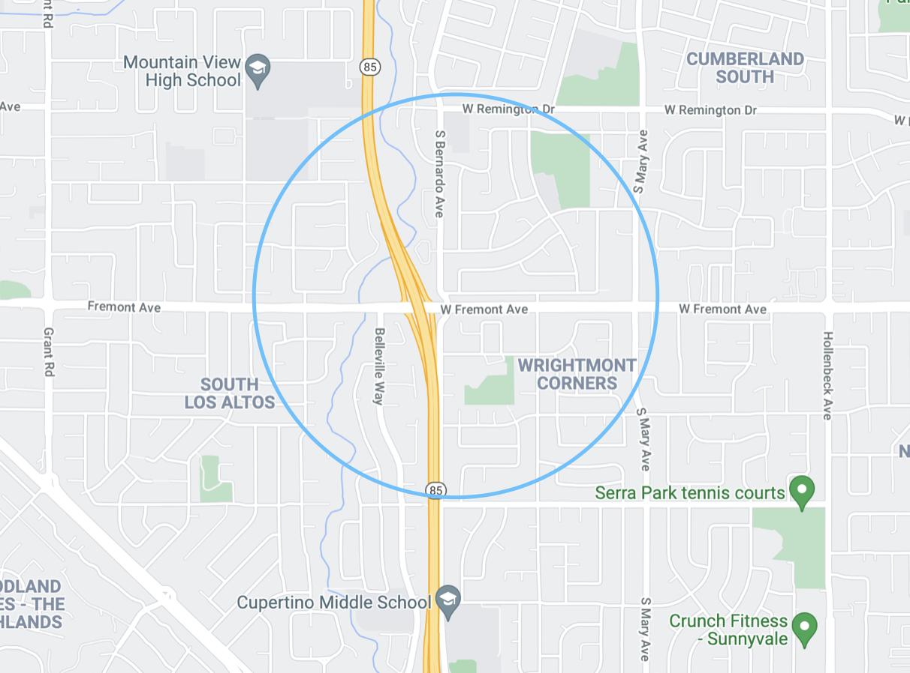

Karuda Child Care
Licensed large family home daycare (#434408468) in business since 2005. Offers a nurturing and engaging environment for children to thrive in and grow. We offer home made food and snacks that meet the needs of their nutrition with plenty of fruits and vegetables. Provide activities to promote brain growth including language development, motor & sensory skills, and arts & crafts. Daycare located in Sunnyvale just off of I-85 near South Bernardo & Fremont Avenue making it easy to commute to and from any major employers in the South Bay Area.
Location
